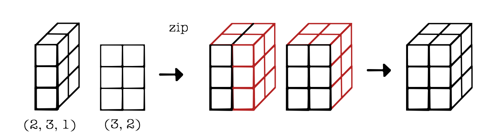
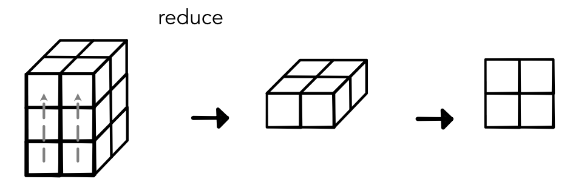
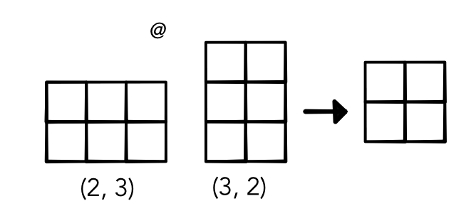
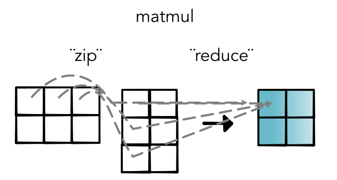

Fusing Operations¶
Another approach we can use to help improve tensor computations is to specialize commonly used combinations of operators. Combining operations can eliminate unnecessary intermediate tensors. This is particularly helpful for saving memory.
There is a lot of ongoing work on how to do this operator fusion automatically. However, for very common operators. it is worth just writing these operators directly and speeding them up.
In minitorch we will do this fusion by customizing special operations. If we find it useful, we will add these operations in Numba.
Example: Matrix Multiplication¶
Let's consider a matrix multiplication example. In past modules we have done matrix multiplication by applying a broadcasted zip and then a reduce. For example, consider a tensor of size (2, 3, 1) and a tensor of size (3, 2). We first zip these together with broadcasting to produce a tensor of size (2, 3, 2):
And then reduce it to a tensor of size (2, 1, 2), which we can view as (2, 2):
This computation is correct, but it has two issues. First, it needs to create a tensor of size (2, 3, 2) in the intermediate step. These tensor can be an order of magnitude larger than either of the tensors that were passed in. Another more subtle problem is that the reduce operator may need to call save_for_backwards on this tensor, which means it stays in memory throughout all of our forward computations.
An alternative option is to fuse together these two operations. We will create a single matmul operations using python @ operator. We can then skip computing the intermediate value and directly compute the output. We can do this by writing a specialized tensor Function with a forward function that directly produces the output and a backward that produces the required gradient.
This allows us to specialize our implementation of matrix multiplication. We do this by 1) walking over the output indices, 2) seeing which indices are reduced, and 3) then seeing which were part of the zip. Here's what that looks like in our diagram.
Given how important this operator is, it is worth spending the time to think about how to make each of these steps fast. Once we know the output index we can very efficiently walk through the input indices and accumulate their sums.
A fast matrix multiplication operator can be used to compute the forward. To compute backward we need to reverse the operations that we computed. In particular this requires zipping grad out with the alternative input matrix. We can see the backward step by tracing the forward arrows:

It would be a bit annoying to optimize this code as well, but again luckily, to compute the backward step , we can reuse our forward optimization. In fact we can simply use the following identity from matrix calculus that tells use backward can be computed as a transpose and another matrix multiply.